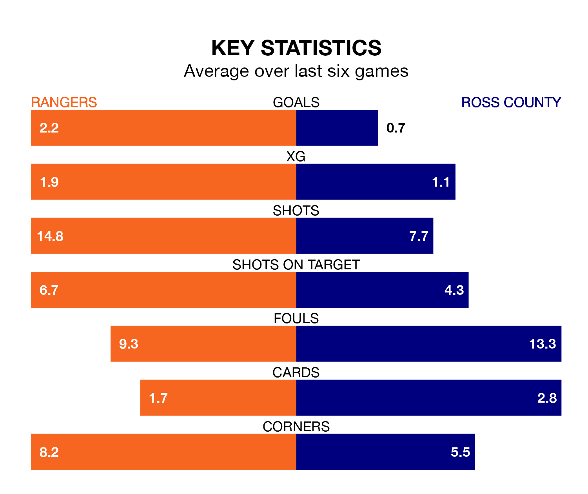

Relegation candidates Ross County face a challenge away against high-flying Rangers at the Ibrox Stadium on Wednesday.
Ross County are 11th in the Premiership table, and have picked up four wins and seven draws in their 23 games to date.
Rangers, meanwhile, are second in the standings with 58 points, having won 19 and drawn one of their first 24 matches, and are three points behind table-toppers Celtic.
With 50 goals in 24 games so far this season, Rangers are the league's second-highest scorers with 2.1 goals per game. And they are conceding fewer than average, letting in 12 goals at a rate of 0.5 per game.
Ross, meanwhile, are below average scorers, with 0.8 goals per game, compared to a league average of 1.3. They have conceded 1.7 goals per game.
With Jack Butland between the sticks, the hosts can rely on one of the league's safest pair of hands. He has kept 15 clean sheets in his 24 appearances this season, and no 'keeper has prevented the opposition scoring more often in the Premiership.
In County's net, Ross Laidlaw has six clean sheets in 19 games. He has conceded a goal every 63 minutes, three times as often as the 180 minutes between goals for Butland.
Rangers are in fantastic form in the Premiership, with five wins and one loss from their last six games.
With no wins and two draws over that period, the Staggies' form is much worse – they have taken two points from 18, compared to Rangers's 15.
In the last 10 years, Rangers and Ross have played each other on 20 occasions. Rangers won 16 of them and they drew four times.
On average, Rangers scored 2.5 goals and the Staggies 0.7 in those matches.
Their last meeting was on August 26, when Rangers won 2-0 away.
Rangers's last match was on February 6, a 2-1 win against Aberdeen, with Rabbi Matondo and Todd Cantwell getting the goals for Rangers.
Ross lost 5-0 against Motherwell last time out, also on February 6.
Wednesday's match will be refereed by Alan James Muir, who has taken charge of seven Premiership games so far this season, issuing one red card and booking 24 players. He has awarded one penalty.
The last Rangers game Muir refereed was a 2-0 home win against St. Johnstone on December 20. His last Ross match was their 2-2 draw away at Livingston on January 30.
Updated: 09:02 (UTC), 13/02/24